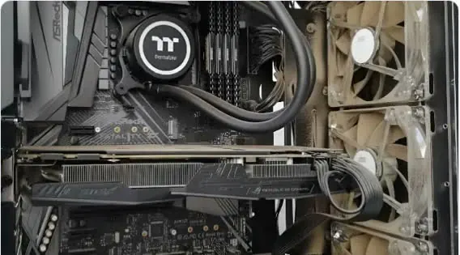
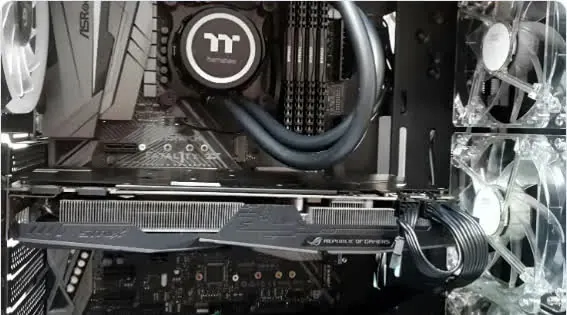

Trabajos realizados
Limpieza interna de un PC Gaming


Las fotos muestran el interior del equipo antes y después de retirar el polvo acumulado. Pulsa en cualquiera para ampliarla.


Las fotos muestran el interior del equipo antes y después de retirar el polvo acumulado. Pulsa en cualquiera para ampliarla.
Cuéntanos qué le ocurre y pide cita en L'Hospitalet.